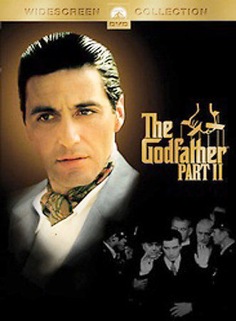
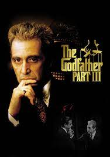
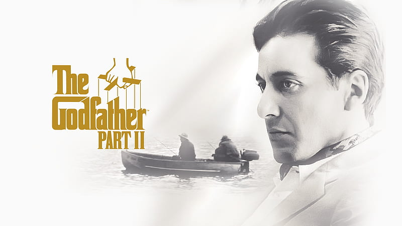
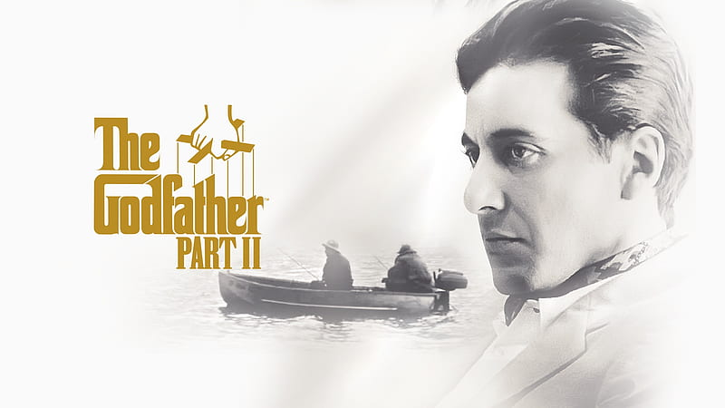

MOVIE PARTS

Part I
The Godfather is a 1972 American crime film directed by Francis Ford Coppola, who co-wrote the screenplay with Mario Puzo, based on Puzo's best-selling 1969 novel of the same title. The film stars Marlon Brando, Al Pacino, James Caan, Richard Castellano, Robert Duvall, Sterling Hayden, John Marley, Richard Conte, and Diane Keaton. It is the first installment in The Godfather trilogy, chronicling the Corleone family under patriarch Vito Corleone (Brando) from 1945 to 1955. It focuses on the transformation of his youngest son, Michael Corleone (Pacino), from reluctant family outsider to ruthless mafia boss.Paramount Pictures obtained the rights to the novel for $80,000, before it gained popularity.
Part II
The Godfather Part II is a 1974 American epic crime film produced and directed by Francis Ford Coppola. The film is partially based on the 1969 novel The Godfather by Mario Puzo, who co-wrote the screenplay with Coppola, and it is both a sequel and a prequel to the 1972 film The Godfather, presenting parallel dramas: one picks up the 1958 story of Michael Corleone (Al Pacino), the new Don of the Corleone family, protecting the family business in the aftermath of an attempt on his life; the prequel covers the journey of his father, Vito Corleone (Robert De Niro), from his Sicilian childhood to the founding of his family enterprise in New York City. The ensemble cast also features Robert Duvall, Diane Keaton, Talia Shire, Morgana King, John Cazale, Mariana Hill, and Lee Strasberg.

Part III
The Godfather Part III is a 1990 American crime film produced and directed by Francis Ford Coppola from the screenplay co-written with Mario Puzo. The film stars Al Pacino, Diane Keaton, Talia Shire, Andy García, Eli Wallach, Joe Mantegna, Bridget Fonda, George Hamilton, and Sofia Coppola. It is the third and final installment in The Godfather trilogy. A sequel to The Godfather (1972) and The Godfather Part II (1974), it concludes the fictional story of Michael Corleone, the patriarch of the Corleone family who attempts to legitimize his criminal empire. The film also includes fictionalized accounts of two real-life events: the 1978 death of Pope John Paul I and the Papal banking scandal of 1981–1982, both linked to Michael Corleone's business affairs.GALLERY
 
